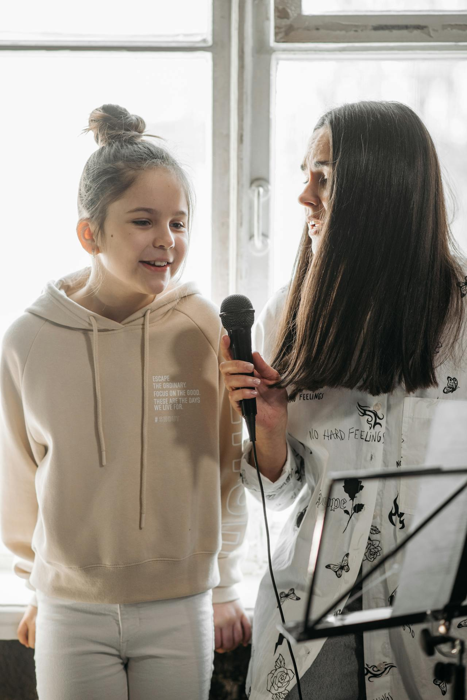

About Intro to Singing
Introduction to Singing was founded in January 2024 by Voice Coach Amecia. We are passionate about vocal education and using technology to help educate others. Introduction to singing was created for all people that love to sing regardless of their level of vocal skill. Learning to sing takes time but the benefits are well worth the effort and time spent. Thru education we hope to assist others learn the rudiments of singing to enhance each singer’s individual vocal technique from the comforts of their home. Hence, we desire everyone to experience the joy of singing with confidence.
Voice Coaching
Looking for a voice coach? We are now accepting new clients! Currently there two slots available. Coaching sessions are available in person at the Dayton, TN locate. Remote voice lessons may also be attended via zoom. Schedule a free 15 minute consultation today! Contact Us by phone, 423.555.5555.
